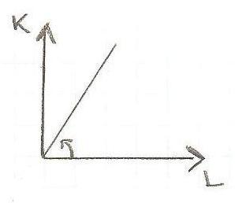

Torna alla pagina di Economia del Cambiamento Tecnologico
:: Economia del Cambiamento Tecnologico ::
Lezione 25/11/2008
Fisiocratici
Fisiocrazia significa potere alla natura perchè in pratica credevano che l'unico settore che veramente contava fosse quello agricolo.
La scuola fisiocratica nasce con François Quisnay, medico alla corte di Luigi XV, nel 1757. E finisce la sua attività appena 20 anni dopo, nel 1777 quando Turgot, l'ultimo dei fisiocratici, è allontanato dalla corte (finisce anche perchè si evolve il pensiero nella scuola classica fondata da Smith nel 1776).
Dunque, come abbiamo accennato all'inizio, l'unico contesto da tenere conto è in realtà quello agricolo: l'agricoltura è il settore fondamentale del sistema socio-economico ed è l'unico settore che produce valore aggiunto.
"1 chicco di grano genera 1 spiga" era il motto dei fisiocratici.
Cosa significa ciò? Significa che ogni input di grano genera n output.
Sono i primi a introdurre nel pensiero economico i concetti di:
- valore aggiunto (1 input -> n output)
- circolarità (al termine di un periodo il sistema economico riesce a produrre beni con i quali si può riavviare il processo produttivo poichè al termine del ciclo tutti i settori sanno ricostruire almeno quello con cui sono partiti + nuovi fattori tramite scambio intersettoriale o consumo)
Perchè l'agricoltura è così rilevante per questo pensiero?
- perchè è il settore in cui operano le imprese di maggiori dimensioni
- è il settore in cui operano le imprese maggiormente innovative
- le aziende agricole hanno un alto indice di intensità del capitale (nel rapporto tra K e L, il K è molto maggiore del L come si può vedere anche dalla linea del grafico) 
- la produzione di valore aggiunto è possibile attraverso l'accumulazione di capitale
Perchè la manifattura e o il commercio non sono altrettanto importanti?
Sono settori sterili in quanto il primo produce solo quanto basta per coprire i costi di produzione: acquisiscono materie prime dall'agricoltura, le trasformano in prodotti o semilavorati senza aggiungere valore in modo significativo; il secondo perchè è un settore di solo scambio.
Quante classi sociali possiamo distinguere?
Possiamo distinguere 3 classi sociali, a ciascuna corrisponde un'attività economica specifica:
- ARISTOCRAZIA -----------------------------> proprietari terrieri
- AGRICOLTORI(classe produttiva) ------------> imprenditori/lavoratori occupati in agricoltura
- MANIFATTURA/COMMERCIO(classe sterile) ---> non danno valore aggiunto
Torna alla pagina di Economia del Cambiamento Tecnologico